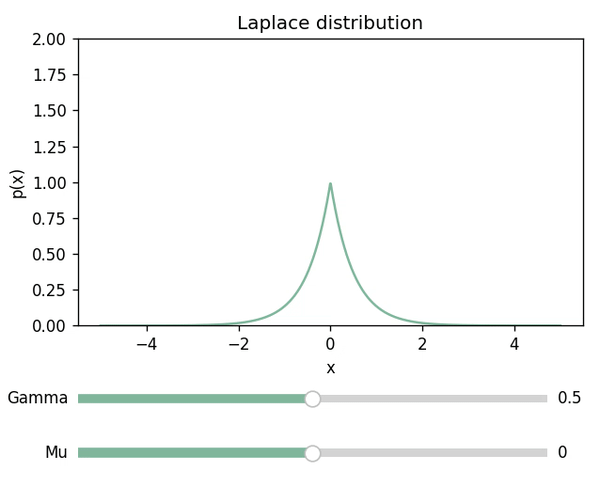

Exponential and Laplace distribution
Contents
Exponential and Laplace distribution#
%matplotlib widget
import ipywidgets as widgets
import matplotlib as mpl
import matplotlib.pyplot as plt
from matplotlib.widgets import Slider, Button
import numpy as np
from scipy.stats import expon
Exponential distribution#
x = np.linspace(0, 2, 1000)
fig, ax = plt.subplots()
fig.subplots_adjust(bottom=0.25)
ax_slider = fig.add_axes([0.2, 0.1, 0.65, 0.03])
def update_lambda(val):
ax.cla()
ax.set_ylim(0,5)
ax.plot(x, expon.pdf(x, scale=1/val), color=default_color)
ax.set_xlabel('X')
ax.set_ylabel('P(X)')
ax.set_title('Exponential distribution')
fig.canvas.draw_idle()
slider_x = Slider(
ax = ax_slider,
label="λ",
valmin=0,
valmax=5,
valinit=1,
color=default_color)
slider_x.on_changed(update_lambda)
ax.set_ylim(0,5)
update_lambda(1)
plt.show()
---------------------------------------------------------------------------
NameError Traceback (most recent call last)
Cell In[2], line 24
15 ax.set_title('Exponential distribution')
16 fig.canvas.draw_idle()
18 slider_x = Slider(
19 ax = ax_slider,
20 label="λ",
21 valmin=0,
22 valmax=5,
23 valinit=1,
---> 24 color=default_color)
26 slider_x.on_changed(update_lambda)
28 ax.set_ylim(0,5)
NameError: name 'default_color' is not defined
Laplace distribution#
x = np.linspace(-5, 5, 1000)
fig, ax = plt.subplots()
fig.subplots_adjust(bottom=0.35)
ax_mu = fig.add_axes([0.2, 0.1, 0.65, 0.03])
ax_gamma = fig.add_axes([0.2, 0.2, 0.65, 0.03])
mu_init = 0
gamma_init = 1
def update(val):
ax.cla()
mu = mu_slider.val
gamma = gamma_slider.val
ax.set_ylim(0,10)
ax.plot(x, (1/(2*gamma)*np.exp(-(abs(x-mu))/gamma)), color=default_color)
ax.set_xlabel('X')
ax.set_ylabel('P(X)')
ax.set_title('Laplace distribution')
fig.canvas.draw_idle()
mu_slider = Slider(
ax = ax_mu,
label="Mu",
valmin=-5,
valmax=5,
valinit=mu_init,
color=default_color)
gamma_slider = Slider(
ax = ax_gamma,
label="Gamma",
valmin=0,
valmax=2,
valinit=gamma_init,
color=default_color)
mu_slider.on_changed(update)
gamma_slider.on_changed(update)
update(0)
plt.show()
